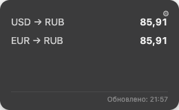
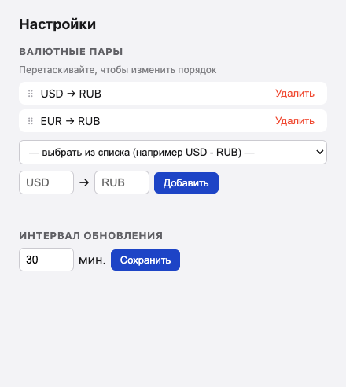

google-kurs-widget
Виджет курса валют для рабочего стола macOS
Небольшое Electron-приложение, которое показывает курсы выбранных валютных пар прямо на рабочем столе и обновляет их автоматически с настраиваемым интервалом.


Как это работает
Внизу виджета — мелкая серая надпись «Обновлено: HH:MM», отражающая время последнего успешного обновления. Если очередное обновление не удалось, виджет продолжает показывать последний известный курс, а не ошибку или пустоту.
google-kurs-widget.duckdns.org), который сам раз в ~30 минут забирает курс из Google Finance (GOOGLEFINANCE в Google Apps Script) и кеширует его. Никакого скрапинга или парсинга HTML на стороне виджета нет. Курс — mid-market (межбанковский), с задержкой до ~20 минут: для отображения годится, для реальных денежных операций — нет.
Установка
- Поставьте Node.js (20 или новее).
- Склонируйте репозиторий и установите зависимости:
git clone git@github.com:bahek2462774/google-kurs-widget.git
cd google-kurs-widget
npm install
npm startПриложение запустится, на рабочем столе появится плавающее окно виджета. Никакого Apple Developer аккаунта для локального запуска не требуется.
Настройка пар и интервала
Нажмите на шестерёнку (⚙) в правом верхнем углу виджета — откроется окно настроек, где можно:
- добавить валютную пару (например
USD→RUB); - удалить ненужную пару;
- изменить интервал автообновления в минутах (по умолчанию 30).
Сборка отдельного приложения
Если не хочется держать терминал открытым, можно собрать обычное .app:
npm run build # dist/mac-arm64/*.app
npm run build:dmg # .dmg-образПриложение не подписано Developer ID, поэтому при первом запуске macOS Gatekeeper покажет предупреждение «нельзя проверить разработчика» — откройте через правый клик на .app → «Открыть».
Ограничения MVP
- Виджет — плавающее окно поверх рабочего стола (frameless, always-on-top), а не системный WidgetKit-виджет в Центре уведомлений.
- Виджет зависит от доступности стороннего API (
google-kurs-widget.duckdns.org) — это личный сервис автора, без формальных гарантий аптайма.